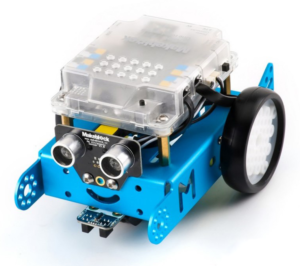
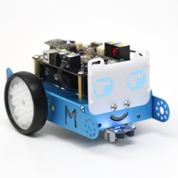
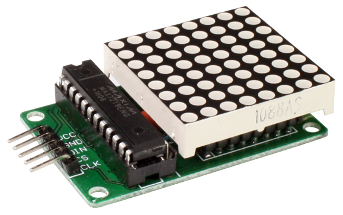
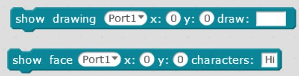

2.2 EXTRAS
2.2.1.- Accesorios que vienen con el kit básico de mBot
Hay ciertos extras que vamos a añadir a nuestro mClon para ser compatible con el mBot comercial :
- Sensor ultrasónico evita obstáculos
- LED RGB dos a cada lado del sensor ultrasónico
- Sensor sigue-líneas. Dos para cada lado de la línea.
- Sensor de luz
- Zumbador

Fuente Makeblock
2.2.2- Extras que no vienen con el kit básico mBot
2.2.2.1.- BRAZO
La propuesta de Catedu es añadir este extra que le da al mClon unas posibilidades muy creativas :
2.2.2.2.- Matriz LED
mBot tiene una matriz de LEDs 8x16 que permite escribir o dibujar

Fuente: Web de Makeblock.es
Para mClon existe una matriz similar 8x8

Pero no es compatible con la instrucciónes de mBlock para la matriz:

En vez de estas, hay que instalar una librería MatrixLed y utilizar las instrucciones conrrespondientes. Sólo compatible con la versión mBlock 3 ya en desuso. Se explica este proceso en https://tecnoloxia.org/mclon/64leds/
Por esta razón NO está en la propuesta de Catedu.

mClon por https://tecnoloxia.org/mclon bajo licencia Creative Commons Reconocimiento-CompartirIgual 4.0 Internacional License.